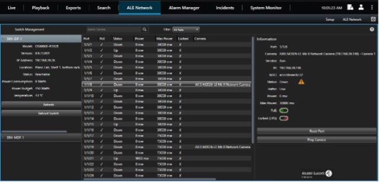

bp-milestone-plugin-sheet

R（何时用）
- 视频监控行业客户（安防集成商、楼宇、园区）摄像机频繁掉线，需派人现场重启
- 客户已用 Milestone Systems VMS + OmniSwitch，想在 VMS 界面内直接处置网络/摄像机故障
- 需要端口级 PoE 可视、按摄像机设 PoE 优先级、端口锁定防篡改
- 视频运维人员（非网络专业）要做一线排障，把 IT 团队解放出来
I（核心理念）
- OmniSwitch Milestone Plugin 是 OmniSwitch 与 Milestone Systems 视频管理系统（VMS）的集成插件（原文p7 ），属服务保障（service assurance）方案：直接在视频监控管理系统内远程排查常见摄像机故障、远程复位失联摄像机。
- 核心价值是省掉昂贵的现场拜访与厂商上门（P12，原文p7 ），让只有基础排障能力甚至零基础的用户也能发现、理解并快速处置问题（原文p7 ）。
A1（选型/决策要点）
- 确认前提条件：客户使用 Milestone VMS + OmniSwitch 组网（原文p7 ）
- 按痛点对号：卡死摄像机、频繁跑现场重启、PoE 问题多发、端口被篡改风险
- 权衡收益：>90% 摄像机问题快速解决、显著减少跑场次数（原文p7 ）
- 人员分工：视频运维做一线排障，IT 聚焦战略工作（原文p7 ）
- 高保障场景（监狱/赌场/银行类）注意：Smart Tool 的一键 PoE 断电保留人工确认；本插件侧重 VMS 内处置
A2（规格细节速查表）
| 能力 | 具体内容 | 页码 |
|---|---|---|
| 远程排障 | 在 VMS 内远程排查常见摄像机问题；远程复位失联摄像机并快速应用处置 | 原文p7 |
| 效率指标 | >90% 摄像机问题更快解决；显著减少跑现场/出差重启摄像机次数 | 原文p7 |
| 端口防篡改 | 端口锁定到摄像机，防止篡改 | 原文p7 |
| 统一界面 | 单一界面同时管理 Milestone 视频系统与 OmniSwitch | 原文p7 |
| 端口级可视 | 按端口查看摄像机 up/down 状态、已消耗 PoE 功率与最大可用 PoE 功率 | 原文p8 |
| 一键测试/复位 | 一键测试摄像机状态、需要时复位 | 原文p8 |
| PoE 优先级 | 按摄像机设置 PoE 优先级，功率预算超限时保关键设备不断电 | 原文p8 |
| 交换机信息 | 快速获取交换机型号、版本、IP、位置、PoE 消耗与温度 | 原文p8 |
| 告警联动 | 向告警管理器发送事件，配合 OmniSwitch 主动解决问题 | 原文p8 |
| 适用对象 | 任何"视频管理是关键业务"的企业或组织 | 原文p8 |
- 文档版本：
DID23041302EN（2023 年 4 月）（原文p8 ）
E（适用场景案例）
- 安防集成商摄像机频繁掉线需派人现场重启 → Milestone Plugin 远程复位，免现场拜访（C7，原文p7 ）
- 关键监控点位不能断电 → 按摄像机设 PoE 优先级，超预算保关键设备（原文p8 ）
- 视频运维团队不会网络排障 → 在熟悉的 VMS 界面内一键测试/复位，无需 CLI（原文p7 /原文p8 ）
- 园区/楼宇大量摄像机布线老化 → 端口级 PoE 消耗可视，提前发现供电异常（原文p8 ）
B（限制与订购坑）
- 前提硬约束：
必须 Milestone VMS + OmniSwitch，缺一不可（原文p7 ） - 彩页未列 SKU 号与许可方式——订购细节待确认，需另查 ALE 报价单
- 定位是视频监控运维插件，不含通用网管功能；与 OmniVista 平台/Smart Tool 互补（F4：
同一网络可同时部署多工具） - 版本为 2023 年 4 月文档，Milestone VMS 版本兼容性需按最新兼容矩阵核实
来源：bp-nms-brochures · ale-omniswitch-milestone-plugin-solution-sheet-en.pdf（DID23041302EN，2023-04），p7-8
仅供内部学习使用 · 教材版权归 ALE Training Services 所有